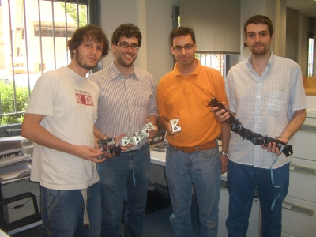

Ayer vinieron de visita a la Escuela Politécnica Superior de la UAM Francisco Ramos, profesor Ayudante del departamento de Automática y Robótica de la Universidad de Castilla-la Mancha y los estudiantes Enrique Holgado y Andrés Millán de la misma Universidad.
El motivo principal era la puesta en marcha del skybot. Enrique había montado el robot y no conseguía que funcionase. Sin embargo, en unos pocos minutos ya lo tenÃamos al 100%. Descubrimos que el problema estaba en el conversor USB-serie, que no funcionaba (no por temas de drivers, sino que habría algún pin roto). Con lo cual, la comunicación con el robot era imposible. Además, el bootloader no estaba grabado.
Aproveché para probar el nuevo programa virus que desarrollé hace unos días y que permite a una Skypic clonarse a sí misma (sin usar el PC). Más adelante publicaré los detalles y un vídeo muy interesante sobre el tema.
Después de resucitar al Skybot, les estuve enseñando mis robots modulares: Hypercube, Minicube y Cube-M, la versión de tres módulos que se mueve de manera autónoma sin conectarse al PC. En la foto de arriba, de izquierda a derecha estamos: Enrique, Francisco, Juan y Andrés.
Andrés se ha construido un robot modular usando tres módulos Y1 fabricados por él mismo. Me comentó que está trabajando en un prototipo nuevo de módulo, más pequeño y de base octogonal. Un proyecto interesantÃsimo. Además, me enseñó unos vídeos espectaculares de las simulaciones que ha realizado, así como el movimiento del robot real. Ya por fin he conocido a otra persona que está trabajando en Robótica modular y con la que podría intercambiar experiencias y conocimientos.
Así que tengo pendiente una visita a la Universidad de Castilla la-Mancha 🙂
Muchas gracias por la visita 😉
Hola, Juan!
Muchas gracias por tu recibimiento y por tu amabilidad. La visita fue muy productiva, no sólo en la parte técnica, sino también en calidad humana.
Estoy deseando devolverte el favor y hacerte de cicerón por la UCLM. Verás que las cosas en que trabajamos aquí son ligeramente distintas y un par de ordenes de magnitud más grandes 🙂
Seguimos en contacto!!!
Hola Paco,
Gracias a vosotros por la visita. Estoy deseando ir allá a ver robots de verdad 😉